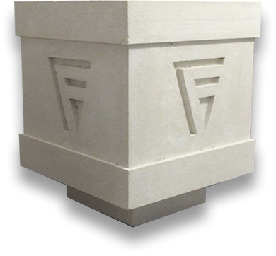
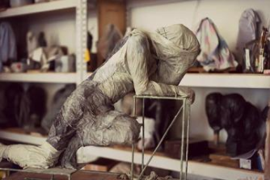

+7 (910) 982-34-42
armandsarh@yandex.ru

Как изготавливаются изделия из архитектурного бетона
Большинство людей считает, что бетонная смесь – это бесформенная серая масса, которая используется исключительно для строительства фундамента и черновых основ. Однако сегодня на загородных участках начали встречаться изделия из архитектурного бетона (белого и цветного цемента), которые заставляют взглянуть на привычный строительный материал под новым углом зрения.
Арт-бетон – пластичный, прочный и легкий в работе материал, который применяют там, где обычный бетон не позволит выполнить поставленную задачу. Архикамень напоминает пластилин, поэтому из него можно создавать разнообразные декоративные элементы, сложные формы для украшения строительных объектов и участков – фигуры, лепнина, статуи, колонны, ажурные решетки, парковые скульптуры и т.д.
В галерее можно ознакомиться с примерами изделий из архитектурного бетона.


Неограниченные возможности
✓ Любая, даже самая сложная объемная форма;
✓ Любой размер – от миллиметровых визиток из бетона до габаритных конструкций в несколько этажей;
✓ Любые цвет и фактура – от имитации различных вариантов природного камня (песчаник, травертин, гранит и т.д.) до высокотехнологичных фактур – глянцевый или прозрачный бетон.
Изделия на века
Подобранные и испытанные, сертифицированные составы высокопрочного фибробетона нового поколения с улучшенными физико-техническими показателями и отработанная технология производства позволяют дать гарантии на материал до 30 лет. Мы стремимся создавать изделия на века!
Совершенство и точность форм
Мы создаем скульптуры, лепнину и сложные архитектурные элементы благодаря мастерству скульпторов, которые вкладывают в изделия свою
душу.
Собственное производство
Наработанный за много лет активного ведения производственной деятельности опыт позволяет исполнять заказы разных объемов и сложности. Возможности применения наших материалов и технологий безграничны, мы не останавливаемся перечисленными на сайте направлениями производства, мы приветствуем любую новую идею по применению наших материалов и технологий для решения Ваших задач.
Скульптурная мастерская
ARMANDS


Скульптурная мастерская ARMANDS занимается производством лепных декоративных изделий из гипса, оселкового мрамора, стеклофибробетонная и натурального камня. Мастерская производит как серийные, так и эксклюзивные изделия по индивидуальным проектам и эскизам. Наше производство позволяет имитировать натуральные камни (туф, песчаник, мрамор, травертин) для внутренних и наружных отделочных работ. Мы изготовим по Вашим чертежам любые декоративные элементы, даже очень сложные, практикуем индивидуальный подход к выбору тех или иных элементов фасада.
Индивидуальный подход!
Мы придерживаемся индивидуального подхода к каждому клиенту! Если Вы обратитесь к нам за какой либо услугой, будьте уверены - мы ответственно отнесемся ко всем вашим пожеланиям и всегда поможем советом.
Изысканность
Замысловатые элементы скульптуры, лепнины, или любого другого элемента архитектуры, будь то капители, балясины, колонны, и др. изготавливаются вручную, что позволяет говорить о высоком качестве, эксклюзивности изделия. Мы вкладываем душу в каждое произведение!
Гибкость в работе!
Мы предлагаем различные конфигурации всех архитектурных элементов, которые мы производим. Если же необходимо поработать над каким то объектом, где нужен нестандартный подход и решение, то все размеры снимаются бесплатно, формы для лепнины и других элементов также предоставляются бесплатно.
Изделия из стеклофибробетона: для чего и где используются?
Добро пожаловать на страницы сайта скульптурной мастерской «Арманд»! Мы умеем воплощать в стеклофибробетоне любые идеи и предлагаем воспользоваться нашими способностями и потенциалом для создания уникального экстерьерного или интерьерного декора. Специализация нашей лепной мастерской – изготовление рельефов, молдингов, пилястр, панно и других отделочных элементов для придания обстановке аристократизма и роскоши. А наша архитектурная мастерская занимается производством колонн, капителей, арок, балясин и прочих деталей, призванных подчеркнуть красоту и статусность фасадов.
Архитектурный бетон – лучший друг современного скульптора.
Добавлением различных компонентов в классическую цементно-песчаную смесь добиваются изменения конечной фактуры, улучшения пластичности, увеличения ее сопротивляемости к внешним факторам. Особенно популярным способом модификации свойств бетона в архитектурных мастерских Москвы стало внесение в его состав стеклофибры. Представляя собой фрагменты рубленого волокна из циркониевого, стойкого к щелочной среде бетонных масс стекла, эта добавка равномерно распределяется в замесе. Получаемый при этом композит называется стеклофибробетон (СФБ). Он используется чаще всего для производства скульптур и различных украшений. Стабильно высокая популярность СФБ основана на следующих его преимуществах:
Стекло – очень прочный, но хрупкий материал. В составе бетонной отливки стекловолокна надежно защищены от внешних влияний, и одновременно превосходно армируют ее. Поэтому готовые изделия из архитектурного бетона этого типа способны выдержать серьезные нагрузки как в части сжатия или разрыва, так и в части стойкости к истиранию или образованию усадочных трещин.Относительно небольшой вес. Тот факт, что стеклянная фибра весит гораздо меньше стальной арматуры, значительно расширяет сферу применения материала. Особенно это свойство полезно для реставрационных служб, сотрудникам которых приходится иметь дело со старинными, уже недостаточно прочными основаниями. Для работающих с новыми объектами специалистов применение изделий из стеклофибробетона позволяет удешевить конструкцию, ведь такие элементы позволяют сэкономить на дорогостоящих строительных материалах для возведения постаментов под скульптурный декор.Пластичность и упругость. По своим технологическим качествам армированное стекловолокном бетонное тесто сопоставимо с гипсом, что позволяет выполнять из него элементы с высокой детализацией. Например, скульптурные портреты людей, где красота создается за счет прорисовки черт лица, волос, атрибутов одежды. Причем после затвердевания готовые работы устойчивы к сырости, чего не скажешь о том же гипсе.
Что мы производим
Отзивы наших клиентов
Aртем Kиракосов
Писатель, художник, художественный критик
Скульптурная мастерская ARMANDS давно и серьезно работает с архитектурным бетоном, гипсом, скульптурой, стеклофибробетоном. А с недавних пор и с композиционными материалами - сложными современными материалами. ARMANDS сотрудничает с такими известными московскими авторами монументальных и камерных композиций, как: Сергей Бычков, Игорь Трейвус, Петр Степанов, Феликс Бух и многими другими. Мастерская выполняет все более сложные монтажные, строительные, дизайнерские работы, берет на себя полный комплекс по предоставлению услуг заказчику, делая общение и полезным и приятным.

Лолита Милявская
Эстрадная певица, актриса, телеведущая, режиссёр.
Я хочу всех познакомить с моим замечательным Другом и Художником Арманом! Если у Вас возникла (или у дизайнеров, отделывающих Вашу квартиру) идея создать ощущение маленького Версаля или Петродворца - это к нему! Я люблю все " старое"… Лепнина, карнизы и многое другое он может выполнить по Вашему эскизу или нарисует сам! Моя квартира в старой Москве заиграла своей прежней жизнью! По глупости, некогда я отбила старинную лепнину и заменила на (теперь уже смешные) разноуровневые потолки в стиле "евроремонта"))) Арман вернул мне утерянный 1902 год моего дома! Духи квартиры успокоились и больше не скрипят половицами..! Но если бы Вы видели какое Чудо он сотворил с квартирой моей соседки!!! Очень советую гипс от Армана!!!С Уважением к настоящему Мастеру и его клиентам.
Контакты
Телефон: +7 (495) 532-83-20
Адрес: Вашутинское шоссе, д. 1. Корп. 2\3
Email: armandsarh@yandex.ru